AI 每日新聞彙整
全部主題
其他
5 家媒體報導chatgptchatwork
ChatGPT計費新制12月上路！Chat、Work將合併「與Codex共用額度」，Pro方案用量率先翻倍
OpenAI宣布12月起ChatGPT與Codex將共用額度並以token計算。Chat與Work介面亦將合併測試，Pro方案額度已翻倍。
- ZDNet AI OpenAI will merge ChatGPT’s chat and work tabs – here’s when, and what to expect
- TechCrunch AI OpenAI is finally merging ChatGPT’s Chat and Work tabs
- 數位時代 ChatGPT計費新制12月上路！Chat、Work將合併「與Codex共用額度」，Pro方案用量率先翻倍
- INSIDE OpenAI 宣布 12 月起 ChatGPT 與 Codex 共用同一份用量額度，改以 token 計算
- iThome OpenAI預計12月起合併ChatGPT與Codex使用額度，依Token計算用量
2 家媒體報導microsoftamazongoogle
AI建設燒錢不手軟 科技大廠現金流受檢視
人工智慧（AI）建設推高投資規模，亞馬遜（Amazon）、微軟（Microsoft）、Google與Meta 2026年資本支出預計超過7,200億美元，約為2年前的3倍，市場緊盯這波支出何...
2 家媒體報導ipoanthropicfunding
Anthropic 第三季度营收 170 亿美元同比暴涨 11 倍，冲刺史上最大 IPO
IT之家 11 月 2 日消息，Anthropic PBC 披露，截至 9 月 30 日的第三季度营收接近 170 亿美元 （IT之家注：现汇率约合 1,132.35 亿元人民币） ，同比暴涨 11 倍，市场对这家 AI 实验室有望创下纪录的 IPO 预期进一步升温。 这家 Claude 大模型背后的公司当地时间周一向美国证券交易委员会（SEC）提交文件显示：截至 9 月末的三个月，净亏损 233 亿美元 （现汇率约合 1,551.98 亿元人民币） ；去年同期净亏损为 121 亿美元 （现汇率约合 805.96 亿元人民币） 。本季度运营费用飙升至 1
2 家媒體報導yorkbravescraping
The New York Times sues Brave web browser for AI scraping and bypassing paywalls
The New York Times and a group of other publications have filed lawsuits against the company that makes the Brave web browser over alleged unlawful scraping to train AI and also letting users bypass their paywalls, as reported by Reuters. According to a complaint filed by the New
2 家媒體報導gameclauderules
Claude’s new rules against game cloning won’t stop the AI copying boom
The tsunami of imitators is way bigger than any one model maker can stem.

2 家媒體報導applerobothomeview
Coming in 2027: Apple’s $1,000 home robot for FaceTime and switching on lights
Apple robot backed by CEO John Ternus may have hefty price tag and limited uses.
2 家媒體報導centerdatacenterdata
OpenAI pitches data center power plants as a way to protect nearby areas
In an announcement on Monday, OpenAI says it will pilot its "Grid Protectors Program" at an upcoming data center in Effingham County, Georgia, where the company promises to free up to 1,000 megawatts of power during extreme weather or emergencies, enough to power air conditioners
datacentercomputejera
AI 資料中心成為日本新商機，為什麼連發電廠都開始投資 AI？
人工智慧算力急劇擴張，正在徹底影響全球能源與基礎建設的產業版圖。日本最大發電企業 JERA 近期宣布將與美國戴 […]
- 科技新報 TechNews AI 資料中心成為日本新商機，為什麼連發電廠都開始投資 AI？
marvellasic2028
聯發科、Marvell、博通ASIC延長賽拚2028 供應鏈「固樁成效」定勝負
半導體供應鏈相關人士強調，AI特用晶片（ASIC）市場競爭顯然已延伸到2028年以後，從聯發科、博通（Broadcom）、Marvell等IC設計龍頭說法觀察，贏下設計...
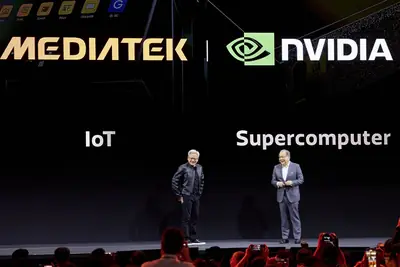
- DIGITIMES 聯發科、Marvell、博通ASIC延長賽拚2028 供應鏈「固樁成效」定勝負
regulationsafetyfdpr
台灣不當AI轉運破口 出口管制擬對齊美國FDPR
中國等國家遭美國禁令限制，以致於難以取得高階晶片或AI伺服器。但殺頭的生意有人做，只要願意多付錢，中國廠商還是有辦法能拿到先進半導體和AI高檔貨。台灣檢調自2026...
- DIGITIMES 台灣不當AI轉運破口 出口管制擬對齊美國FDPR
sochbmchip
記憶體漲潮澆熄手機買氣 拖累SoC今年出貨估「年減近2成」
AI基建火熱，導致3C終端產品使用的記憶體價格飆漲，除了對手機、NB等終端銷售造成衝擊外，也反向影響上游SoC晶片等業者的出貨表現。且需留意的是，考量2027年記憶體...
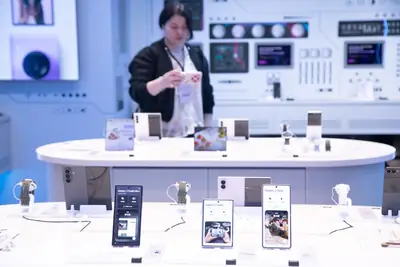
- DIGITIMES 記憶體漲潮澆熄手機買氣 拖累SoC今年出貨估「年減近2成」
edadicchip
華大九天收購奇捷科技 中國EDA補齊AI晶片及3DIC布局
中國電子設計自動化（EDA）業者華大九天宣布，擬以不超過人民幣（單位下同）2.19億元自有及自籌資金，收購奇捷科技（深圳）有限公司（奇捷科技）不超過51%股權。此次...
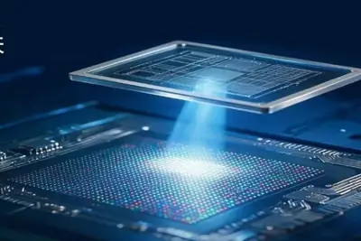
- DIGITIMES 華大九天收購奇捷科技 中國EDA補齊AI晶片及3DIC布局
cevaneupronpu
Ceva NeuPro NPU向上跨足AI基礎設施 補足效率不與大廠競爭
美國矽智財業者Ceva近期發表新一代NeuPro NPU產品組合，首度將產品線延伸至AI基礎設施。Ceva首席策略長Iri Trashanski於11月2日在台舉行的記者會表示，此舉並非要...
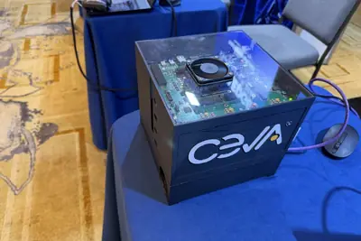
- DIGITIMES Ceva NeuPro NPU向上跨足AI基礎設施 補足效率不與大廠競爭
xaihbmceo
IT早报 1103：奥尔特曼称个人电脑浪费内存遭全网声讨；苹果 2026 财年净利润 1321 亿美元；美团称外卖 15 元以下订单数量减半；世界机器人登泰山大赛收官...
“IT早报”时间，大家好，现在是 2026 年 11 月 3 日星期一，今天的重要科技资讯有： 1. OpenAI CEO 奥尔特曼称个人电脑浪费内存遭全网声讨，马斯克也来补刀 OpenAI CEO 奥尔特曼称把 DRAM 装在个人电脑中是资源浪费，引发全网不满，马斯克公开发文声讨，称民众理应拥有自己的内存，还直接骂奥尔特曼是“智障”。>> 查看详情 2. 苹果 2026 财年归母净利润 1321.75 亿美元同比增长 18%，iPhone、Mac 和服务业务收入及大中华区净销售额均实现增长 苹果 2026 财年年报营业总收入 4788.34 亿美元、同
llmdefault0.37
llm 0.37
Release: llm 0.37 There's a lot of stuff in this new release of my LLM CLI tool and Python library, representing around two months of accumulated features and fixes. I added gpt-6.1-sol and gpt-6.1-terra , plus a new llm openai endpoint add command to make it easier to configure
- Simon Willison llm 0.37
duoiphone
苹果承认 iPhone Duo 折叠屏手机交货延迟，供货紧张何时缓解仍难以预测
IT之家 11 月 3 日消息，苹果 COO 萨比赫 · 汗在第四财季财报电话会议上承认，新款折叠屏手机 iPhone Duo 交货延迟，供货紧张何时能够缓解仍无法确定。 他透露：“iPhone Duo 目前供不应求。产能提升进展顺利，我们正努力让消费者尽快拿到这款革命性的新产品。但供需何时能够恢复平衡，眼下还很难预测。” 据外媒 TechCrunch 报道，没有前往苹果零售店排队抢购、也没有第一时间预订的消费者，发现 iPhone Duo 要等到明年才能发货。美国电信运营商 Verizon 甚至向受交货延迟影响的客户赠送礼品卡，以表达歉意。 iPhon
2028
OpenAI 喊话 2028 美大选候选人：AI 将是重要的必答题
IT之家 11 月 3 日消息，据《商业内幕》2 日晚间报道，OpenAI 首席全球事务官、负责游说事务的克里斯 · 莱汉私下向有意参加 2028 年美国总统大选的人士提出， AI 将成为左右下一届总统竞选的重要议题 。 莱汉在一份备忘录中指出，候选人不能只围绕竞选热点准备几套说辞，还需要拿出一套 完整的 AI 治理理念 。他特别警告民主党人，如果反对建设 AI 发展所需的基础设施，可能会在这场政策争论中处于不利地位。 莱汉认为，数据中心之争的影响可能远远超出地方建设项目本身。随着美国两党开始筹备下一届总统大选，OpenAI 试图借此影响 潜在总统候选人
tenpayglobaltencent
腾讯 TenPay Global 与万事达卡签署合作备忘录，入境扫码支付、汇款与智能体支付同步推进
IT之家 11 月 3 日消息，在 11 月 2 日 2026 年香港金融科技周期间，腾讯旗下跨境支付平台 TenPay Global 与万事达卡签署合作备忘录。 腾讯表示，双方将结合万事达卡的全球网络与微信支付生态，推动入境游客使用其已有的数字钱包或银行 App，在中国境内支持扫码支付的商户处完成付款，并将合作范围延伸至跨境汇款和智能体支付领域。 万事达卡数据显示，截至 2026 年 6 月的一年内，中国内地入境消费同比增长 51.3%。2026 年 1 至 8 月，境外电子钱包通过微信支付在中国境内的交易笔数和交易金额分别同比增长 81.8% 和 8
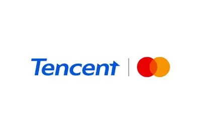
trajectoryraisesnontechnical
Trajectory raises $45M to make AI model training accessible to nontechnical experts
The one-year-old startup is now valued at $300 million.
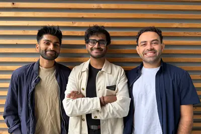
hbclpddrai250
高通 HBC 完成验证：133 TB/s 内存带宽 18 倍于 AI200，AI250 明年上半年出样
IT之家 11 月 3 日消息，高通昨日宣布，其第一代高带宽计算（HBC）技术已在美国圣迭戈实验室完成了硬件验证，验证了该技术的完整读写能力和近存计算能力。 高通 HBC 技术通过将多层 LPDDR 内存堆叠在计算芯片上方，试图在提升 AI 推理内存带宽的同时降低能耗。 搭载该架构的 AI250 加速器计划于 2027 年上半年出样，意味着这一以 LPDDR 替代 HBM 的推理内存方案进入产品化阶段。 IT之家注：HBC（High Bandwidth Compute，高带宽计算）是高通针对 AI 推理场景开发的近存计算架构。与传统 HBM 主要通过堆叠
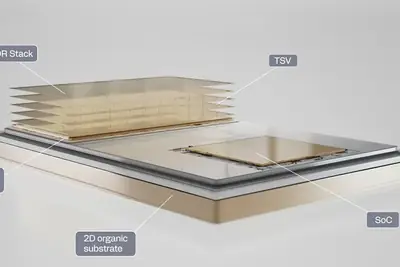
900cowork1.19
Anthropic 高付费客户超 1.19 万家，净收入留存率达 900%
IT之家 11 月 3 日消息，Anthropic 于当地时间 11 月 2 日披露的数据显示，截至 2026 年 9 月 30 日，公司净收入留存率（NRR）约为 900%，意味着同一批客户在 2025 年第三季度至 2026 年第三季度的一年内，支出规模增长了约 9 倍。这一指标反映的是现有企业客户持续扩大 Claude 使用规模，而非单纯依靠新客户拉动收入。 同期，年收入贡献超过 10 万美元 （现汇率约合 66.6 万元人民币） 的客户中，超过 50% 同时使用 Claude 平台及至少一款 Anthropic 自有应用（如 Claude Cod
mclarencae
英超跑品牌 McLaren 讓物理 AI 與 AI Agent 分工，車輛研發如何從逐一模擬走向大量設計探索？
英國超跑品牌 McLaren Automotive 與工程運算平台 Rescale、NVIDIA 合作，將代理式人工智慧（Agentic AI）導入完整的車輛工程研發流程。這套專屬 AI 數位工程平台整合電腦輔助工程（CAE）、系統工程與設計資料，結合物理 AI（AI Physics）模型與 AI Agent，協助工程師加速設計評估、減少重複性工作。其技術重點在於降低大量設計方案的所需的運算時間與成本，讓工程團隊能在相同時間內探索更多可能性。 傳統 CAE 模擬成本高，限制設計探索規模 汽車工程研發長期面臨計算成本與設計探索效率之間的平衡問題。傳統電腦輔
- TechOrange 科技報橘 英超跑品牌 McLaren 讓物理 AI 與 AI Agent 分工，車輛研發如何從逐一模擬走向大量設計探索？
rsiwarnsvery
Anthropic warns that it’s very close to RSI capability, aka self-building AI
RSI is the point at which AI grows so good at training itself that it spawns a dramatic acceleration of AI capabilities. To the AI doomers, RSI represents the cataclysm from which there is no return.
nand2028ssd
【科技早餐】鎧俠 2027 年 NAND 產能提前售罄！AI 儲存需求升溫、美國電子認證新規上路
【科技早餐】今天精選 6 則國內外重要科技新聞。 ＊鎧俠 2027 年 NAND 產能提前售罄，2028 年半數供應已被鎖定 日本 NAND Flash 大廠鎧俠（Kioxia）10 月 30 日在財報說明會指出，2027 年的產能已全數敲定供應對象，2028 年約半數產能也透過長期供應合約完成安排。AI 資料中心與企業級 SSD 需求持續成長，抵銷智慧手機、個人電腦市場疲弱的影響。公司並已開始討論更遠期的供應需求。這些安排反映客戶提前鎖定未來產能，不代表晶片已經生產或交貨，也不等於所有供應條件都已完全確定。 鎧俠同日公布的財報顯示，NAND 售價與出貨
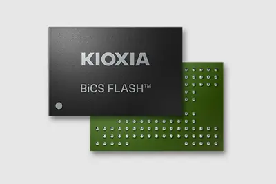
- TechOrange 科技報橘 【科技早餐】鎧俠 2027 年 NAND 產能提前售罄！AI 儲存需求升溫、美國電子認證新規上路
hostsquarespacelays
Web host Squarespace lays off 19% of its employees
The website builder said that the job losses are part of a broader restructuring of its organization.
- TechCrunch AI Web host Squarespace lays off 19% of its employees
octoberlatestannounced
The latest AI news we announced in October 2026
Animated carousel of images from AI posts in October
medicalathenahealthpatients
Athenahealth patients can ask Claude about their medical records now
The partnership could provide one of the nation’s largest AI companies with a bevy of personal medical data.
premiummacbookreports
Don’t want a touchscreen? All premium MacBook Pros could have one soon, reports say
New reports indicate the touchscreens are to become the standard on premium MacBook Pros.
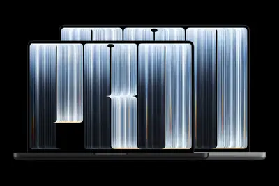
minifirefoxwindow
Firefox’s new Mini Window is every multitasker’s dream – Chrome can’t do this
The open-source browser’s newest feature lets you pop out a page – or part of a page – into its own mini window. See why this is incredibly cool.
agenticanalyticsagent
Raising the quality of insights in agentic analytics
In just a few years, generative AI has changed the face of enterprise analytics, notably by making analytics accessible to users across the organization. Agentic AI promises to do even more, by automating entire workflows and taking actions based on agent insights. But there is a
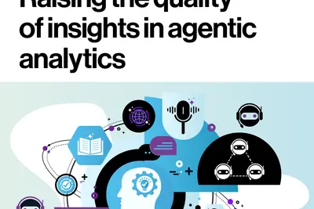
- MIT Technology Review AI Raising the quality of insights in agentic analytics
- MIT Technology Review AI The agentic web is here
galaxysamsungdisplay
Samsung’s Privacy Display may be coming to more Galaxy phones – what we know
Privacy Display on the Galaxy S26 Ultra was a big hit in our hands-on. Now, we may see it roll out to more Galaxy phones.
predictstealthhuman
42AI comes out of stealth with $62.5M and a world model that can ‘predict human behavior’
Here's a question straight out of sci-fi: What if AI could predict what you were going to do before you decided to, even in a completely new situation?
triedthrivingminecraft
50 AI agents tried to build a thriving Minecraft civilization – it didn’t end well
It turns out even bots can’t escape bureaucracy.
muskbotgrok
Elon Musk throttles Grok Bot limits due to ‘unsustainably high’ costs
Musk recently referred to Grok Bot as having "the fastest growth of a product that I've ever seen in my life."
scalinggitbuilt
Scaling Git at OpenAI
How OpenAI built Pando, a Git-compatible backend designed for the scale of development that Codex makes possible.
- OpenAI Scaling Git at OpenAI
gridprotectorsprogram
Introducing the Grid Protectors Program
OpenAI’s Grid Protectors Program will work with utilities to help future compute campuses support grid reliability and protect consumer electricity costs.
founderbostontechcrunch
2 days till TechCrunch Founder Summit: Boston founders don’t need a Silicon Valley address to build something big
TechCrunch Founder Summit happens on November 4 in Boston for a founder-focused agenda and impactful connections. Save up to $100 or get discounts with group passes.

botgrokspacex
马斯克回应 Grok Bot 额度消耗过快：服务成本高到难以为继
IT之家 11 月 2 日消息，埃隆 · 马斯克称，AI 富足时代终将到来，但眼下，Grok Bot 还做不到不限量使用。 这位 SpaceX 首席执行官当地时间上周日在 X 平台发文称：有用户反馈每周额度消耗速度远超往常，对此他表示，该 AI 智能体的服务成本“相对于收入而言高到难以为继”。 Grok Bot 是 SpaceX 在 8 月推出的 AI 智能体，其依托虚拟计算机替人完成购物等各类任务。该产品分多个档位，从免费版到每月 200 美元 （IT之家注：现汇率约合 1,332 元人民币） 套餐不等。 所有档位都设有每周重置的使用限额。SpaceX
u.s.censusbureau
The U.S. Census Bureau and “Super Intelligence”
I was reminded today of AI Adoption Rate Trending Down for Large Companies , a chart produced by Apollo Global Management in September 2025, which appeared to show a slowdown in U.S. corporate AI adoption based on numbers collected by the U.S. Census Bureau. At the time I used th
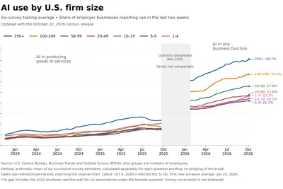
- Simon Willison The U.S. Census Bureau and “Super Intelligence”
id.eradriveonesuv
上汽大众 ID.ERA 5X 将于 11 月 12 日上市，家族首款纯电 SUV
IT之家 11 月 2 日消息，据汽车之家今日报道，上汽大众 ID.ERA 5X 将于 11 月 12 日上市。新车已于此前开启盲订，车辆是 ID.ERA 序列下首款纯电 SUV，同时也是大众全球首款 CMP 纯电平台搭配 CEA 电子电气架构的量产车型。 IT之家注意到，该车定位“超能纯电 SUV”，搭载激光雷达、“行云智行”智能辅助驾驶系统，拥有 2815mm 轴距， 配备宁德时代电池 。 ID.ERA 5X 配备 192 线激光雷达、地平线征程 6H 芯片、标配 4 纳米 MTK 8676 车规级座舱芯片，搭载“行云智行”智能辅助驾驶系统，具备 4